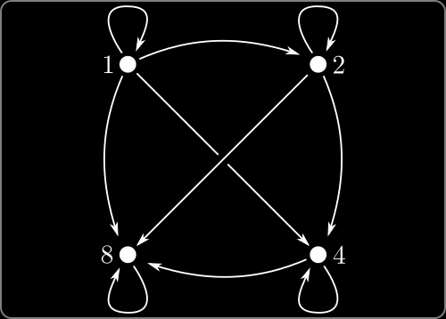

\( \require{cancel}
\newcommand{\ds}{\displaystyle}
\newcommand{\es}{ {\varnothing}}
\newcommand{\st}{ \;:\; }
\newcommand{\pow}[1]{ \mathcal{P}\left(#1\right) }
\newcommand{\set}[1]{ \left\{#1\right\} }
\newcommand{\Mod}[1]{\;(\mathrm{mod}\; #1)}
\newcommand{\rel}{\;R\;}
\newcommand{\nrel}{\;\cancel{R}\;}
\renewcommand{\neg}{\sim}
\renewcommand{\text}[1]{\mathsf{\mbox{#1}}}
\DeclareMathOperator{\gcd}{gcd}
\DeclareMathOperator{\lcm}{lcm}
\newcommand{\lt}{<}
\newcommand{\gt}{>}
\newcommand{\amp}{&}
\definecolor{fillinmathshade}{gray}{0.9}
\newcommand{\fillinmath}[1]{\mathchoice{\colorbox{fillinmathshade}{$\displaystyle \phantom{\,#1\,}$}}{\colorbox{fillinmathshade}{$\textstyle \phantom{\,#1\,}$}}{\colorbox{fillinmathshade}{$\scriptstyle \phantom{\,#1\,}$}}{\colorbox{fillinmathshade}{$\scriptscriptstyle\phantom{\,#1\,}$}}}
\)
PLP - 26
Topic 26—Relations
| Demirbaş & Rechnitzer |
|---|
Relations
Relationships
Many expressions in mathematics describe relationships between objects
- \(a=b\) — the objects \(a\) and \(b\) are equal.
- \(a \lt b\) — the number \(a\) is strictly less than the number \(b\text{.}\)
- \(a \in B\) — the object \(a\) is a member of the set \(B\text{.}\)
- \(A \subseteq B\) — the set \(A\) is a subset of the set \(B\text{.}\)
- \(a \mid b\) — the number \(a\) is a divisor of the number \(b\text{.}\)
Focus on (say) divisibility — we can think of the symbol “\(|\)” as an operator on pairs of integers.
- we write \(a \mid b\) when \(a\) divides \(b\)
- and write \(a \nmid b\) when \(a\) does not divide \(b\)
Divisibility naturally defines a subset of \(\mathbb{N} \times \mathbb{N}\text{:}\)
\begin{equation*} R = \set{(a,b) \in \mathbb{N}\times \mathbb{N} \st a \text{ divides }b} \end{equation*}
Relation as subset of Cartesian product
Consider divisibility on the set \(A = \set{1,2,4,8}\)
\begin{align*}
1\mid 1 && 1\mid 2 && 1\mid 4 && 1\mid 8\\
\color{magenta}{2\nmid 1} && 2\mid 2 && 2\mid 4 && 2 \mid 8\\
\color{magenta}{4\nmid 1} && \color{magenta}{4\nmid 2} && 4\mid 4 && 4\mid 8\\
\color{magenta}{8\nmid 1} && \color{magenta}{8\nmid 2} && \color{magenta}{8\nmid 4} && 8 \mid 8
\end{align*}
Can define the relation as subset of \(A\times A\text{:}\)
\begin{equation*}
R = \set{(1,1), (1,2), (1,4), (1,8), (2,2),(2,4),(2,8), (4,4),(4,8),(8,8)}
\end{equation*}
And we can write \(x\; R \; y\) when \((x,y) \in R\)
Relations
Definition:
Let \(A\) be a set.
- A relation, \(R\text{,}\) on \(A\) is a subset \(R \subseteq A \times A\text{.}\)
- If \((x,y) \in R\) we write \(x \rel y\text{,}\) and otherwise write \(x \nrel y\)
Examples
- \(R = \set{(x,x) \st x \in \mathbb{R} }\) is “\(=\)” on the reals
- \(S = \set{(x,y) \in \mathbb{Z}^2 \st x-y \in \mathbb{N}}\) is “\(\gt\)” on integers.
Let \(B\) be a set, then
- \(R = \es\) is the trivial relation on \(B\)
- \(S = B\times B\) is the universal relation on \(B\)
Draw the relation
- Consider the set \(A = \set{1,2,4,8}\) and divisibility.
- Draw node for each \(a \in A\text{.}\)
- If \(a \rel b\) then draw arrow \(a \to b\)
